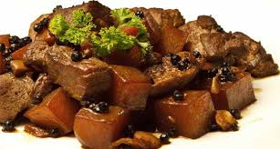

|  | AdoboAdobo has many regional variations and chicken and pork adobo is just one of the common interpretations of our quintessental Filipino stew. |
Ingredients8 whole chicken legs (about 4 pounds), cut into drumstick and thigh sections 1 1/2 cups distilled white vinegar 3 garlic cloves, crushed 2 bay leaves 1/2 tablespoon whole black peppercorns, crushed lightly 3/4 cup soy sauce 3 tablespoons vegetable oil cooked rice as an accompaniment. |
|
| <<< Back to Main Dish | |